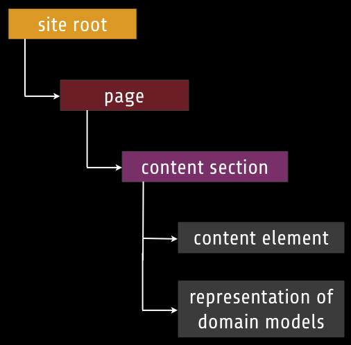
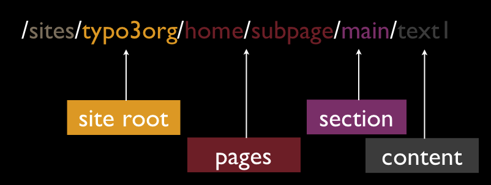
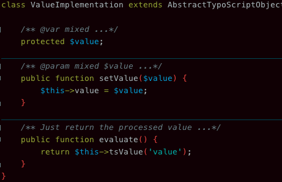
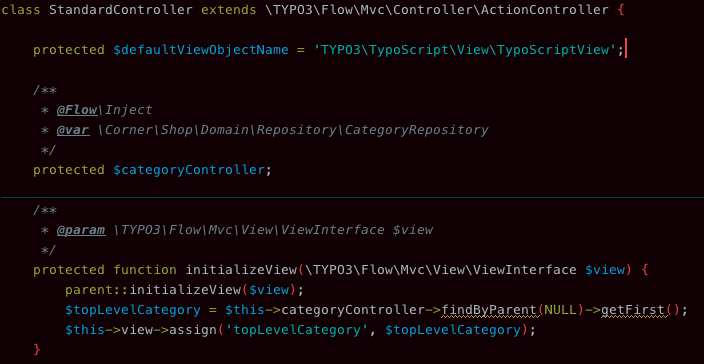
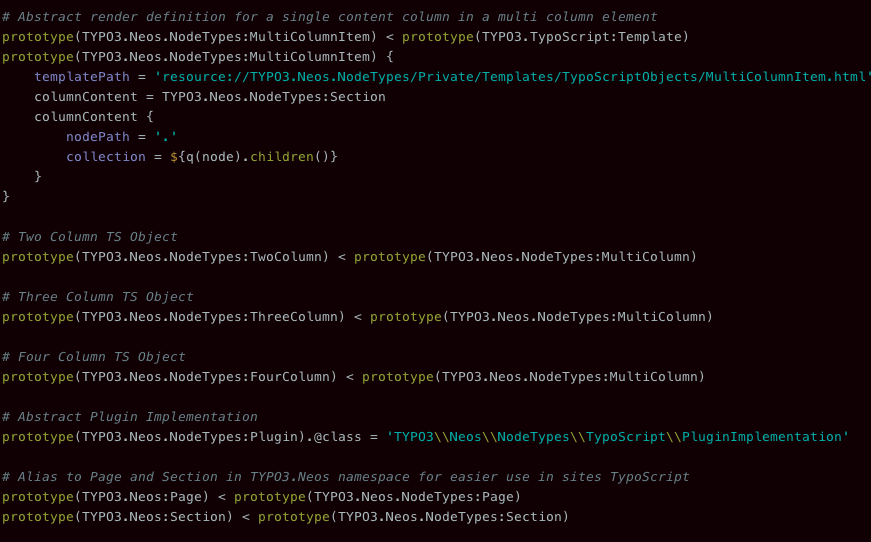

Bastian Waidelich (@bwaidelich) and Christian Müller (@daskitsunet)
Hierarchical store for unstructured data.
Elements inside the store are called Nodes.
NodeType defines the schema for a node. Different nodes may have different properties and work differently. For example Pages inherit from "Folder" types. NodeTypes can have superTypes and so inherit properties from parent types.


The Content Repository can operate in different contexts, a context defines a global scope for nodes, like language or workspace. The same node can exist in all contexts (but doesn't need to).
TypoScript is intended as a configurable view
# defining a prototype from implementation class
prototype(TYPO3.TypoScript:Template).@class =
'TYPO3\\TypoScript\\TypoScriptObjects\\TemplateImplementation'
# Using a prototype
title = TYPO3.TypoScript:Template
# simple quoted string value assignment
title.templatePath = 'resource://someResourcePath'
# EEL Expression
title.items = ${q(node).add(q(node).parents())}
# Applying a processor
title << 1.wrap(prefix:'', suffix: ' ')
# prototype short name from defined default namespace
# opening braces can be inlined with prototype usage
mainMenu = Menu {
# simple integer value assignment
entryLevel = 2
}
PHP implementations of functionality accessible in TypoScript. For example a Menu.

\TYPO3\TypoScript\TypoScriptObjects\ArrayImplementation
Collection of TypoScript objects that get rendered and their output is concatenated.
\TYPO3\TypoScript\TypoScriptObjects\CaseImplementation
A switch to branch rendering depending on a set of Matchers. Each matcher is consulted in order and if the
Matcher condition matches this element is rendered and returned.
\TYPO3\TypoScript\TypoScriptObjects\MatcherImplementation
The actual Matcher implementation for the Case object. A matcher has a condition that must evaluate to
boolean TRUE to have this matcher render.
\TYPO3\TypoScript\TypoScriptObjects\CollectionImplementation
Iterates over a collection of elements (for example nodes or objects) to render each element and concatenate
the result.
\TYPO3\TypoScript\TypoScriptObjects\TemplateImplementation
Renders a Fluid template.
\TYPO3\TypoScript\TypoScriptObjects\ValueImplementation
Renders a simple value
Available data in TypoScript, can be accessed by TypoScript objects and EEL. View variables are the context.

Prototypes are the building blocks of TypoScript. You either create a new prototype with a implementation class or you inherit from one of the existing prototypes and change the settings.

Processors can be used to modify values in TypoScript. They are similar to stdWrap in TYPO3 CMS.
# wrapping the title with title tags
title << 1.wrap(prefix:'<title>', suffix: '</title>')
# converting the maximumLevels value to integer (maybe saved as string)
maximumLevels << 1.toInteger()
TypoScript is side effect free and via full addressing you are able to render any sub element as needed. Can be useful for AJAX.
EEL was created for accessing and traversing data and collections, additionally it can do boolean comparisons and simple arithmetic. It is used to traverse the node hierarchy and make node data accessible inside TypoScript.
# ${} are the delimiters for EEL expressions inside TypoScript.
# The actual EEL expression is everything inside of the braces.
# accessing an element from the TypoScript context
nodePath = ${nodePath}
# boolean value (this returns boolean true)
condition = ${true}
# FlowQuery operation to access (node) property
# q() is the delimiter for a flow query operation in EEL
text = ${q(node).property('text')}
# FlowQuery operation to generate a rootline of parent nodes
title.items = ${q(node).add(q(node).parents())}
# If statement with FlowQuery operation is() which uses filtering syntax
collection =
${q(node).is('[instanceof TYPO3.Neos.NodeTypes:Section]') ? q(node).children() : q(node).children(this.getNodePath()).children()}
EEL exposes the content of the context on top level.
# Access an element / property called nodePath on the context
# this is an example from Neos where the context is always an array, so actually you
# get the value of $context['nodePath']
${nodePath}
# This is an example from the upcoming view configuration
# The context is here directly set to an object
# we are calling a method on the object and return the result
# The result will be of the same type as the method return value
${isPackage("TYPO3.Flow")}
With FlowQuery operations you can traverse hierarchies and access property paths.
# In Neos nodes can be traversed and there are specific FlowQuery operations
# working on node trees.
${q(node).children()}
# Operations can support filtering the result collection too
# Here we only get children that are of NodeType TYPO3.Neos.NodeTypes:Section
${q(node).children('[instanceof TYPO3.Neos.NodeTypes:Section]')}
# Looks very similar to the first example, but here we actually traverse a Flow
# model hierarchy and fetch child categories, in this case we need to give the name
# of the property which contains the child objects.
${q(activeCategory).children('children')}
# Checking if the children collection contains any elements
${q(activeCategory).children('children').count() > 0}
# we are calling two methods on an object and do a boolean AND with the returns
# The result will be a boolean value
${isPackage("TYPO3.Flow") && isController("ViewsConfigurationTestC")}
# Adding simple values
${1 + 2}
# Dividing 100(%) by the number of columns (some context variable)
# to determine a column width
${100 % columns}